《Operating Systems: Three Easy Pieces》读书笔记（第 39-43 章）
书接上回，本文是第 39-43 章的笔记。内容基于自身情况记录，仅供参考，Dialogue 的相关章节已略过。
Chapter 39: Interlude: Files and Directories
Each file / directory has an inode number (the low-level name) associated with it.
File system APIs (system calls):
- The tools that can trace system calls: strace, dtruss.
- Creating files:
- Step1: Making a structure (the inode) that will track virtually all relevant information, including the file size, where its blocks are on disk, and so forth.
- Step2: Linking a human-readable name to that file, and putting that link into a directory.
/**
* O_CREAT: create file.
* O_WRONLY: the file can only be written to.
* O_TRUNC: if the file already exists, truncates it to a size of zero bytes.
* S_IRUSR: permission - readable by the owner.
* S_IWUSR: permission - writable by the owner.
*/
int fd = open("foo", O_CREAT | O_WRONLY | O_TRUNC, S_IRUSR | S_IWUSR); // Return a file descriptor.
- Reading and writing files:
ssize_t read(int fildes, void *buf, size_t nbyte);
ssize_t write(int fildes, const void *buf, size_t nbyte);
- Writing back to disk immediately:
// All the modified data and attributes of fildes will be moved to a permanent storage device.
int fsync(int fildes);
- Renaming file:
// Usually implemented as an atomic operation.
int rename(const char *old, const char *new);
- Reposition read/write file offset:
/**
* If whence is SEEK_SET, the offset is set to offset bytes.
* If whence is SEEK_CUR, the offset is set to its current location plus offset bytes.
* If whence is SEEK_END, the offset is set to the size of the file plus offset bytes.
*/
off_t lseek(int fildes, off_t offset, int whence);
- Getting file information:
int fstat(int fildes, struct stat *buf);
int stat(const char *restrict path, struct stat *restrict buf);
// "struct stat":
struct stat { /* when _DARWIN_FEATURE_64_BIT_INODE is NOT defined */
dev_t st_dev; /* device inode resides on */
ino_t st_ino; /* inode's number */
mode_t st_mode; /* inode protection mode */
nlink_t st_nlink; /* number of hard links to the file */
uid_t st_uid; /* user-id of owner */
gid_t st_gid; /* group-id of owner */
dev_t st_rdev; /* device type, for special file inode */
struct timespec st_atimespec; /* time of last access */
struct timespec st_mtimespec; /* time of last data modification */
struct timespec st_ctimespec; /* time of last file status change */
off_t st_size; /* file size, in bytes */
quad_t st_blocks; /* blocks allocated for file */
u_long st_blksize;/* optimal file sys I/O ops blocksize */
u_long st_flags; /* user defined flags for file */
u_long st_gen; /* file generation number */
};
- Removing files:
- Step1: Removing the “link” between the human-readable name to the given inode number.
- Step2: Decrementing the reference count by 1.
- Step3: Freeing the inode and related data blocks if the reference count is 0.
int unlink(const char *path);
- Creating directories:
int mkdir(const char *path, mode_t mode);
- Reading directories:
int main(int argc, char *argv[]) {
DIR *dp = opendir(".");
assert(dp != NULL);
struct dirent *d;
while ((d = readdir(dp)) != NULL) { // Iterate over the directory entries.
printf("%lu %s\n", (unsigned long) d->d_ino, d->d_name);
}
closedir(dp);
return 0;
}
// "struct dirent":
struct dirent {
char d_name[256]; // Filename.
ino_t d_ino; // inode Number.
off_t d_off; // Offset to the next dirent.
unsigned short d_reclen; // Length of this record.
unsigned char d_type; // Type of file.
};
- Deleting directories:
int rmdir(const char *path);
- Creating hard links: Create another name in the directory you are creating the link to, and refers it to the same inode number (i.e., low-level name) of the original file. The file is not copied in any way.
- We can’t create one to a directory.
- We can’t hard link to files in other disk partitions.
int link(const char *path1, const char *path2);
- Shared parent/child file table entrie:
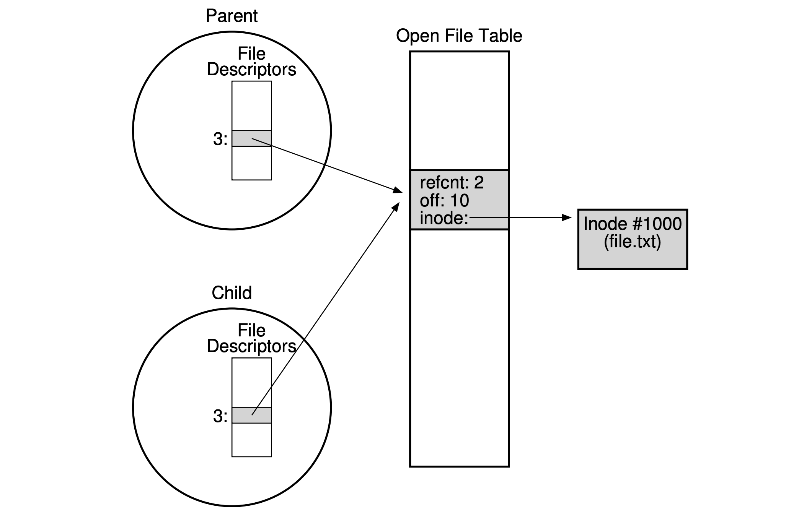
- By
fork(): The open file is shared between parent and child processes.
int main(int argc, char *argv[]) {
int fd = open("file.txt", O_RDONLY);
assert(fd >= 0);
int rc = fork();
if (rc == 0) { // Child process.
rc = lseek(fd, 10, SEEK_SET); // Change offset.
printf("%d\n", rc); // 10.
} else if (rc > 0) { // Main process.
(void) wait(NULL);
printf("%d\n", (int) lseek(fd, 0, SEEK_CUR)); // 10.
}
return 0;
}
- By
dup()/dup2()/dup3(): Which allows a process to create a new file descriptor (fd) that refers to the same underlying open file as an existing descriptor. Each “fd” is a private, per-process entity, which refers to an entry in the open file table. The entry therein tracks which file this access refers to, the current offset of the file, and other relevant information.
int main(int argc, char *argv[]) {
int fd = open("README", O_RDONLY);
assert(fd >= 0);
int fd2 = dup(fd);
// Now fd and fd2 can be used interchangeably.
return 0;
}
- Memory mapping with
mmap():
// Persistent stack example of how mmap() naturally creates a software abstraction of persistent memory.
// Author: Terence Kelly
// tpkelly @ { acm.org, cs.princeton.edu, eecs.umich.edu }
// Note: Use 'truncate' to make the initial (empty) backing file,
// whose size should be a multiple of the system page size:
//
// prompt> getconf PAGESIZE
// 4096
// prompt> truncate -s 4096 ps.img
//
// makes a 4096-byte empty file. The first sizeof(size_t) bytes will
// be interprted as the number of items on the stack; the remainder
// of the file will contain the integers contained in the stack.
// Now you can run the program:
//
// prompt> ./pstack 7 13 47 pop
// 47
// prompt> ./pstack pop pop 99
// 13
// 7
// prompt> ./pstack pop
// 99
//
// Notice that items push'd in one invocation of the program persist
// until the next invocation: The stack is persistent.
//
// You can use hexdump to examine the contents of the backing file:
//
// prompt> hexdump ps.img
#include <assert.h>
#include <fcntl.h>
#include <stdio.h>
#include <stdlib.h>
#include <string.h>
#include <unistd.h>
#include <sys/mman.h>
#include <sys/stat.h>
#include <sys/types.h>
typedef struct {
size_t n;
int stack[]; // Zero-length per C99.
} pstack_t;
int main(int argc, char *argv[]) {
int fd, rc;
struct stat s;
size_t file_size;
pstack_t *p;
fd = open("ps.img", O_RDWR);
assert(fd > -1);
rc = fstat(fd, &s);
assert(rc == 0);
file_size = (size_t) s.st_size;
assert(file_size >= sizeof(pstack_t) && file_size % sizeof(int) == 0);
p = (pstack_t *) mmap(NULL, file_size, PROT_READ|PROT_WRITE, MAP_SHARED, fd, 0);
assert(p != MAP_FAILED);
for (int i = 1; i < argc; i++)
if (strcmp(argv[i], "pop") == 0) {
if (p->n > 0) // Stack not empty.
printf("%d\n", p->stack[--p->n]);
} else { // Push.
if (sizeof(pstack_t) + (1 + p->n) * sizeof(int) <= file_size) // Stack not full.
p->stack[p->n++] = atoi(argv[i]);
}
(void) close(fd);
return 0;
}
Symbolic links: It’s an actual file of the specific type, it’s formed by holding the pathname of the linked-to file as the data of the link file. So, it would be possible to cause a “dangling reference“ issue if the original file has been deleted.
UNIX permission bits:
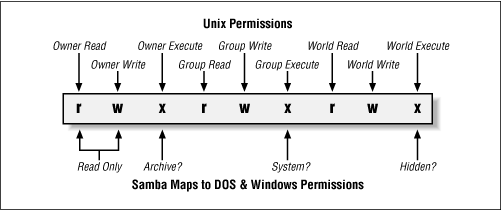
- For directories, the execute bit enables a user (or group, or everyone) to do things like change directories (i.e., cd) into the given directory, and, in combination with the writable bit, create files therein.
- Making and mounting a file system:
- Creating:
mkfswith specified system type and device. - Mounting:
mountthe created file system to a specific directory (pathname) for access.
Chapter 40: File System Implementation
- A simple case for illustration: 64 blocks in total, each of size 4KB in the below case.
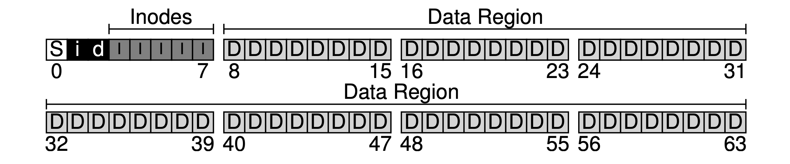
- S: The superblock, containing the information about this file system, including how many inodes and data blocks are in the file system, where the inode table begins (block 3), etc. When mounting a file system, the OS will read the superblock first, to initialize various parameters, and then attach the volume to the file-system tree.
- i / d: The allocation structures, using bitmap to track which data region or inode table is valid, which comes into play when creating new files.
- I: The inode table, holding an array of on-disk inodes.
- D: The data region, for saving user file data.
- Inode (index node): The inode (specified by i-number) is used for tracking the information like which data blocks (in the data region) comprise a file, the size of the file, its owner and access rights, access and modify times, and other similar kinds of information.
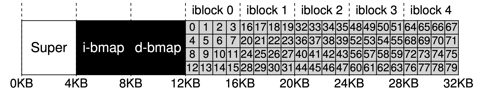80 inodes with each of 256 bytes here
- Calculation:
- blk => (inumber * sizeof(inode_t)) / blockSize.
- sector => ((blk * blockSize) + inodeStartAddr) / sectorSize (disk are “sector” addressable).
- How it refers to where data blocks are?
- Extents: An extent is simply a disk pointer plus a length (in blocks), which could delineate a portion of data belonging to a file.
- Direct pointers: Each pointer refers to one disk block that belongs to the file.
- Indirect pointers: Multi-level index, each pointer refers to a block that contains more pointers, each of which point to user data.
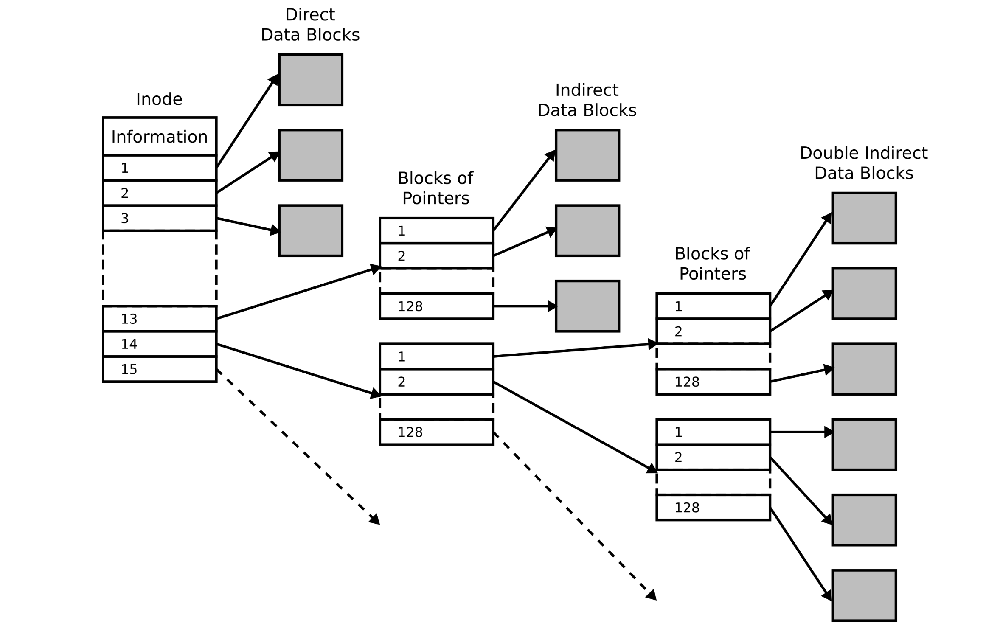Direct / indirect pointers
- Directory organization:
- Each has a related inode (i-number) with the type of “directory”.
- For each item in a given directory, there is an [entry name, inode number] entries table in the data block(s) of the directory. For each string, there may also be a length.
- Directories could be stored in B-tree form to have a faster file creation.
- Access paths:
- Opening a file: open(“/foo/bar”, O RDONLY).
- FS reads in the block that contains inode number 2 (the root inode block).
- FS finds the on-disk pointers to data blocks in the inode, which contain the entries table of the root directory.
- FS finds the entry with the name of “foo” and its inode number.
- FS recursively traverses the pathname until the desired inode (bar) is found, then load it into memory.
- FS does a final permissions check, allocates a file descriptor for this process in the per-process open-file table, and returns it to the user.
- Reading a file:
- FS consults inode to find the location of the first data block, then reads it into memory.
- FS updates the in-memory open file table for this fd, updating the file offset, etc.
- Writing a file:
- FS reads / updates the data bitmap.
- FS reads / updates the inode.
- FS writes the actual block.
- Creating a file:
- FS reads / updates the inode bitmap to find a free inode.
- FS writes the inode for the new file.
- FS updates the entries table of the directory.
- FS reads / updates the directory inode.
- FS reads / updates data bitmap to find free space.
- FS write file data.
- Caching and buffering:
- Caching:
- Static partitioning: Keeping a fixed portion of memory for caching the latest used file blocks, which seems to be wasteful.
- Dynamic partitioning: Many modern OSs integrate virtual memory pages and file system pages into a “unified page cache“, so memory can be allocated more flexibly across virtual memory and file system, depending on which needs more memory at a given time.
- Buffering: Buffer writes and performs them in batch later to employ a better IO scheduling and avoid unnecessary operations.
Chapter 41: Locality and The Fast File System
- FFS (Fast File System):
- A Cylinder group is the same concentric track across platters. Since modern devices don’t expose geometry, we could also use block groups: Contiguous regions of the logical block address space. The target is to keeping related data within the same group to minimize seeks.
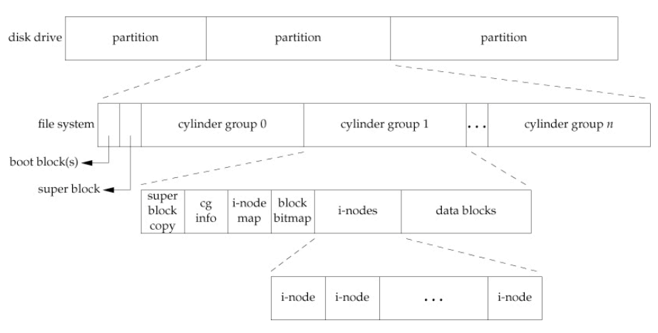Cylinder Group
- For directories placement: Find the cylinder group with a low number of allocated directories (to balance directories across groups) and a high number of free inodes (to subsequently be able to allocate a bunch of files), and put the directory data and inode in that group.
- For files placement: First, it makes sure (in the general case) to allocate the data blocks of a file in the same group as its inode, thus preventing long seeks between inode and data. Second, it places all files that are in the same directory in the cylinder group of the directory they are in.
- Exception for large files: After some number of blocks are allocated into the first block group (e.g., 12 blocks, or the number of direct pointers available within an inode), FFS places the next “large” chunk of the file (e.g., those pointed to by the first indirect block) in another block group (perhaps chosen for its low utilization). Then, the next chunk of the file is placed in yet another different block group, and so on. This way may hurt performance (more seeking time between each group), but by enlarging the block size, we can amortize the cost of drive-seeking.
- Exception for small files: FFS modified libc, and the library would buffer writes and then issue them in 4KB chunks to the file system.
Chapter 42: Crash Consistency: FSCK and Journaling
- The crash consistency problem: The file system should transition from one consistent state (e.g., before the file got appended to) to another atomically even though the disk only commits one write at a time, and crashes or power loss may occur between these updates.
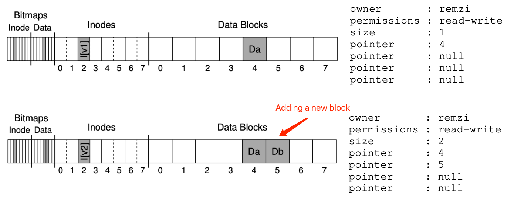
- Solution #1 - The file system checker (fsck): The goal is to make sure the file system metadata is internally consistent, but it’s too slow.
- Superblock: fsck checks if the superblock looks reasonable, mostly doing sanity checks such as making sure the file system size is greater than the number of blocks that have been allocated.
- Free blocks: fsck scans the inodes, indirect blocks, double indirect blocks, etc., to build an understanding of which blocks are currently allocated within the file system. It uses this knowledge to produce a correct version of the allocation bitmaps; thus, if there is any inconsistency between bitmaps and inodes, it is resolved by trusting the information within the inodes.
- Inode state: Each inode is checked for corruption or other problems. For example, fsck makes sure that each allocated inode has a valid type field. If there are problems with the inode fields that are not easily fixed, the inode is considered suspect and cleared by fsck; the inode bitmap is correspondingly updated.
- Inode links: fsck also verifies the link count of each allocated inode. It scans through the entire directory tree, starting at the root directory, and builds its own link counts for every file and directory in the file system. If there is a mismatch between the newly-calculated count and that found within an inode, corrective action must be taken, usually by fixing the count within the inode. If an allocated inode is discovered but no directory refers to it, it is moved to the lost+found directory.
- Duplicates: fsck also checks for duplicate pointers, i.e., cases where two different inodes refer to the same block. If one inode is obviously bad, it may be cleared. Alternately, the pointed-to block could be copied, thus giving each inode its own copy as desired.
- Bad blocks: A check for bad block pointers is also performed while scanning through the list of all pointers. A pointer is considered “bad” if it obviously points to something outside its valid range.
- Directory checks: fsck performs additional integrity checks on the contents of each directory, making sure that “.” and “..” are the first entries, that each inode referred to in a directory entry is allocated, and ensuring that no directory is linked to more than once in the entire hierarchy.
- Solution #2 - Journaling (write-ahead logging): when updating the disk, before overwriting the structures in place, first write down a little note (somewhere else on the disk, in a well-known location) describing what you are about to do. By writing the note to disk, you are guaranteeing that if a crash takes places during the update (overwrite) of the structures you are updating, you can go back and look at the note you made and try again.
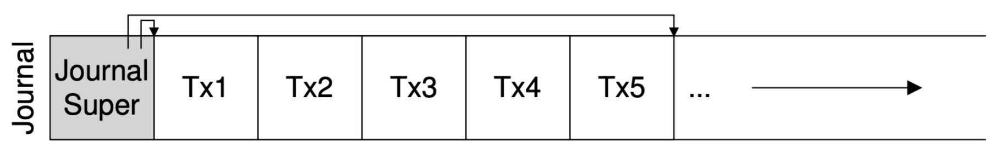
- The oldest and newest non-checkpointed transactions is logged in the journal superblock.
- [Data journaling]:
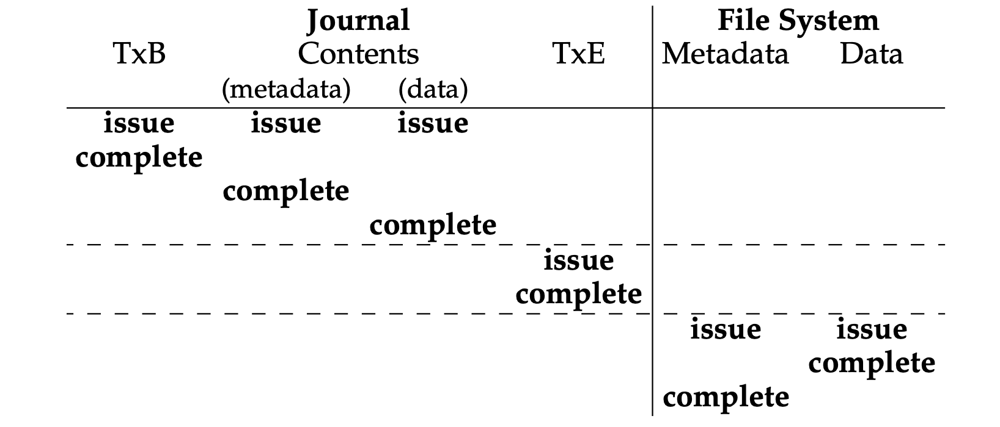
- TxB (Transaction begin): Include information about the pending update to the FS (e.g., the final addresses of the going-to-update blocks), and some kind of transaction identifier (TID).
- TxE (Transaction end): A marker of the end of this transaction, and will also contain the TID.
- Journaling all user data (in addition to the metadata of the file system), but normal operations may get slower due to the doubling write traffic.
- Steps:
- Journal write: Write the contents of the transaction (containing TxB and the contents of the update) to the log; wait for these writes to complete.
- Journal commit: Write the transaction commit block (containing TxE) to the log; wait for the write to complete; the transaction is now committed.
- Checkpoint: Write the contents of the update to their final locations within the file system.
- Free: Some time later, mark the transaction free in the journal by updating the journal superblock.
- [Metadata journaling]:
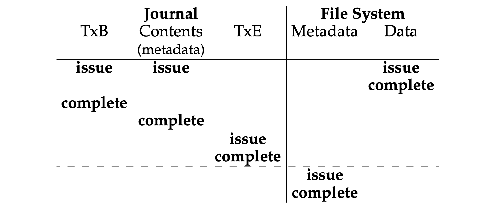
- Journaling only file system metadata.
- Steps:
- Data write: Write data to final location; wait for completion (the wait is optional; see below for details).
- Journal metadata write: Write the begin block and metadata to the log; wait for writes to complete.
- Journal commit: Write the transaction commit block (containing TxE) to the log; wait for the write to complete; the transaction (including data) is now committed.
- Checkpoint metadata: Write the contents of the metadata update to their final locations within the file system.
- Free: Later, mark the transaction free in journal superblock.
- Other solutions:
- Soft updates: Carefully orders all writes to the file system to ensure that the on-disk structures are never left in an inconsistent state.
- Backpointer-based consistency: An additional back pointer is added to every block in the system, when accessing a file, the file system can determine if the file is consistent by checking if the forward pointer (e.g., the address in the inode or direct block) points to a block that refers back to it.
Chapter 43: Log-structured File Systems
- LFS (Log-structured File Systems): Writing all updates (such as data blocks, inodes, etc.) to the disk sequentially to better leverage the efficiency of sequential write. When writing to disk, LFS buffers updates in an in-memory segment, and then writes the segment all at once to the disk. LFS always writes to an unused portion of the disk, and then later reclaims that old space through cleaning (shadow paging).
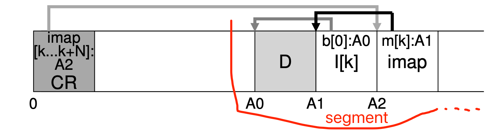LFS buffer the updates into a small segment, which will be commited to disk at once
- Key elements:
- Checkpoint region (CR): Which contains pointers to (i.e., addresses of) the latest pieces of the inode map, and thus the inode map pieces can be found by reading the CR first.
- D: Data block.
- Inode: Same structure as previous.
- Inode map (imap): A structure that takes an inode number as input and produces the disk address of the most recent version of the inode. Any time an inode is written to disk, the imap is updated with its new location.
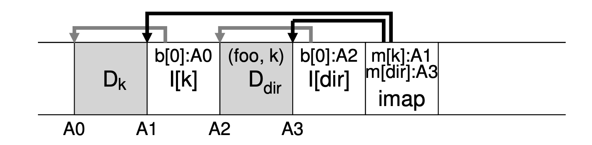LFS on-disk layout of the file "dir/foo"
- File access processes (“dir/foo”):
- CR -> Find the location of imap.
- Imap -> Find the location of inode of directory “foo” (A3).
- Directory inode (A3) -> Find the location of the directory data (A2).
- Directory data (A2) -> Get the inode number of the file “foo” (k).
- Imap -> Find the location of inode number k (A1).
- A1 -> Read the file data.
- Garbage collection: Periodically, the LFS cleaner reads in a number of old (partially-used) segments, determines which blocks are live within these segments, and then write out a new set of segments with just the live blocks within them, freeing up the old ones for writing. LFS adds a “segment summary block“ to each segment that describes each block to determine whether a data block is live, it includes the block inode and its offset.
- When: Either periodically, during idle time, or when you have to because the disk is full.
- Which bloks to clean: Cleaning cold segments sooner and hot segments later.
(N, T) = SegmentSummary[A]; // N - inode number, T - inode offset.
inode = Read(imap[N]);
if (inode[T] == A) // A - block disk address.
// Block D is alive.
else
// Block D is garbage.
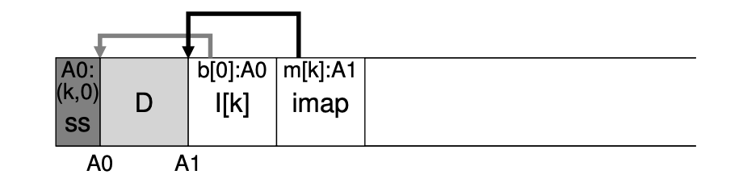A segment with its segment summary block
- Crach recovery:
- Atomic CR update: LFS keeps two CRs, one at either end of the disk, and writes to them alternately. LFS also implements a careful protocol when updating the CR with the latest pointers to the inode map and other information; specifically, it first writes out a header (with timestamp), then the body of the CR, and then finally one last block (also with a timestamp). If the system crashes during a CR update, LFS can detect this by seeing an inconsistent pair of timestamps. LFS will always choose to use the most recent CR that has consistent timestamps, and thus consistent update of the CR is achieved.
- User data recovery: During normal operation, LFS buffers writes in a segment, and then, writes the segment to disk. LFS organizes these writes in a log, i.e., the CR points to a head and tail segment, and each segment points to the next segment to be written. LFS tries to rebuild many of those segments in a recovery through a technique known as roll forward. The basic idea is to start with the last checkpoint region, find the end of the log (which is included in the CR), and then use that to read through the next segments and see if there are any valid updates within it. If there are, LFS updates the file system accordingly and thus recovers much of the data and metadata written since the last checkpoint.
评论 | Comments